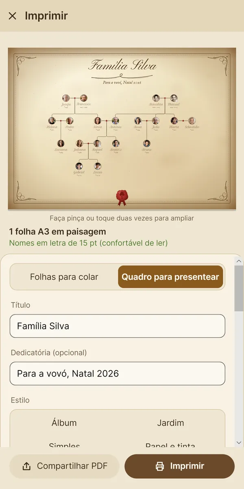

Uma árvore genealógica de presente de Natal
Poucos presentes emocionam tanto os avós quanto ver a família inteira junta, com fotos, em um quadro. E não precisa ser especialista em genealogia: com o celular e umas duas noites, fica pronto.

Ideias de presente
Um quadro para os avós
O clássico: a árvore desde os bisavós até os netos, com a foto de cada um, um título e uma dedicatória. Em uma moldura de 30×40 cm fica ótimo em uma estante; em 50×70, vira o destaque da sala.
O PDF para toda a família
No dia de Natal, mande o PDF no grupo da família. Todo mundo pode abrir no celular e ampliar para ler cada nome, e os primos finalmente descobrem como se chamavam os bisavós.
Uma árvore para completar juntos
Comece com o que você sabe e mande a árvore para tios e primos: cada um completa o seu ramo com o Ramo, que é grátis para eles, e devolve. O Ramo junta as versões sem duplicar ninguém. O quadro final é um presente feito pela família toda.
Para um recém-nascido
A árvore de um bebê com pais, avós e bisavós é uma lembrança para a vida inteira, e um presente lindo para os pais.
Passo a passo, a tempo para o Natal
- Três semanas antes: junte nomes, datas e fotos. Pergunte aos seus pais e tios (com discrição, se for surpresa) e fotografe com o celular as fotos antigas do álbum. Se não souber uma data exata, marque como aproximada.
- Duas semanas antes: monte a árvore. Comece por você ou pelos avós e vá adicionando pais, pares e filhos tocando nos cartões. O Ramo organiza tudo sozinho.
- Dez dias antes: prepare o quadro. Em Imprimir, escolha Quadro para presentear, o tamanho da moldura, o estilo, o título e a dedicatória. Confira se os nomes estão legíveis (veja como).
- Uma semana antes: imprima. Leve o PDF à gráfica, em papel fosco, e compre uma moldura desse tamanho. Em dezembro os sites de impressão demoram mais, então não deixe para o último dia.

Qual estilo escolher
- Pergaminho: papel envelhecido, letra caligráfica e selo de lacre. O mais tradicional.
- Papel e tinta: um desenho a bico de pena com um laço vermelho, bem natalino.
- Jardim e Álbum: mais simples e claros, para casas modernas.
Você pode trocar de estilo quantas vezes quiser e ver o resultado na hora.
Se o tempo estiver curto
Imprima a árvore em A4 ou A3 em casa ou na copiadora mais perto: o Ramo ajusta à folha e mostra o tamanho dos nomes. E se nem isso der tempo, o PDF no celular de cada um também é um presente.
Os quadros para presentear fazem parte do Ramo completo, um único pagamento e sem assinatura. Criar a árvore, compartilhar em PDF e imprimir em folhas é grátis.
Mais guias